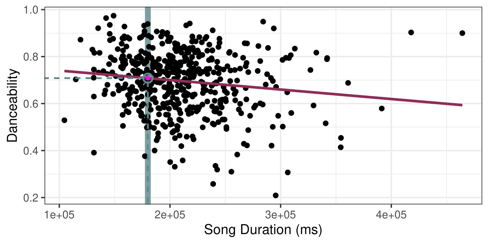
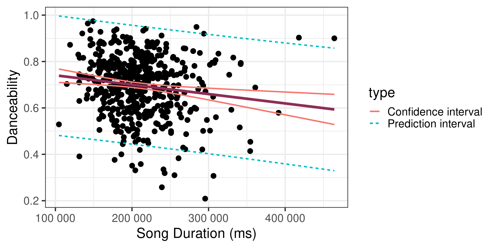
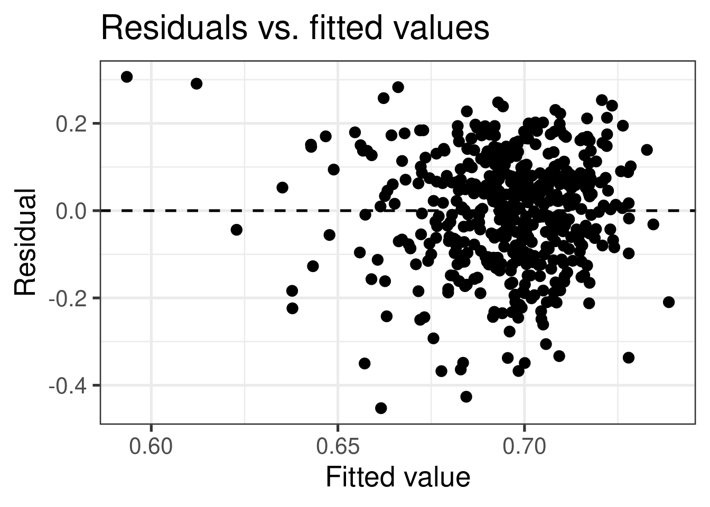
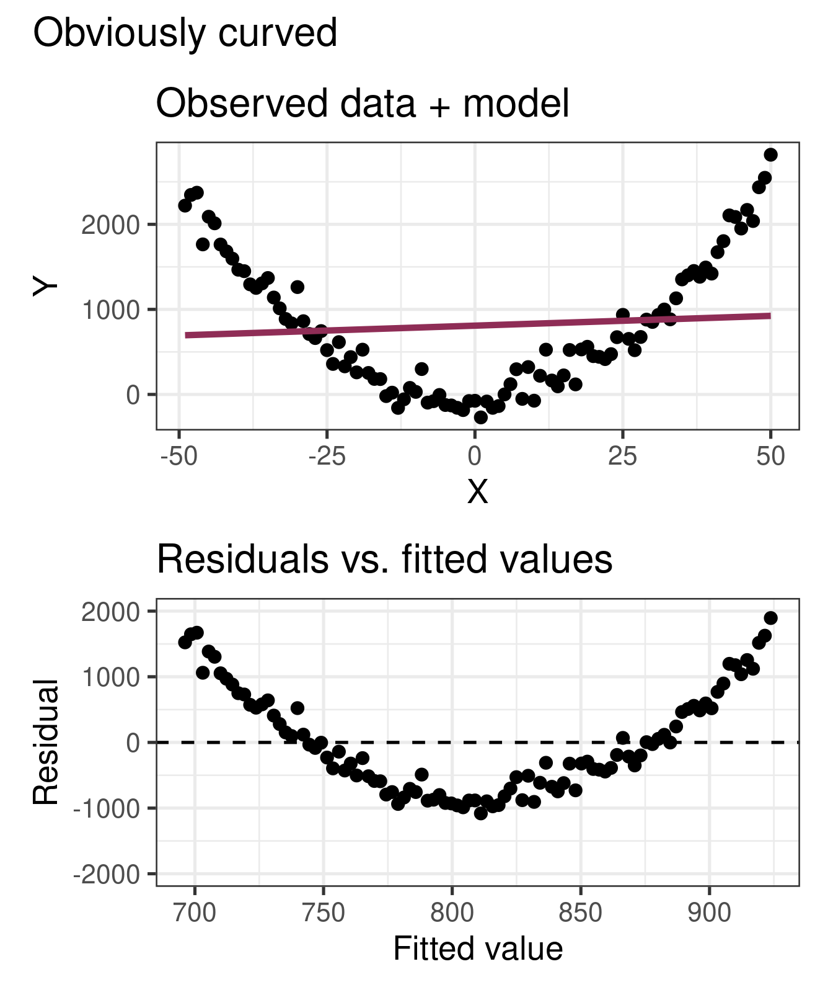
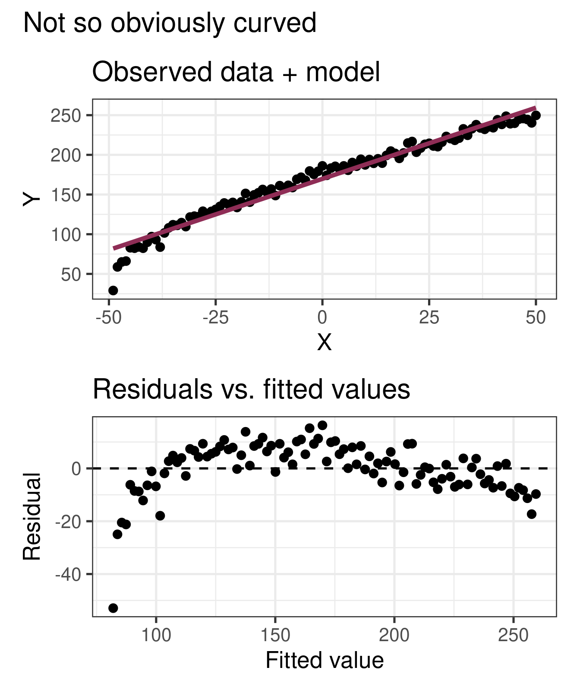
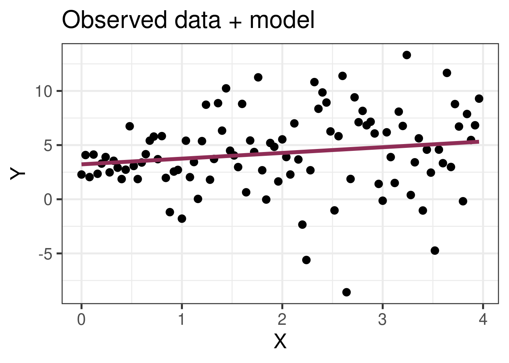
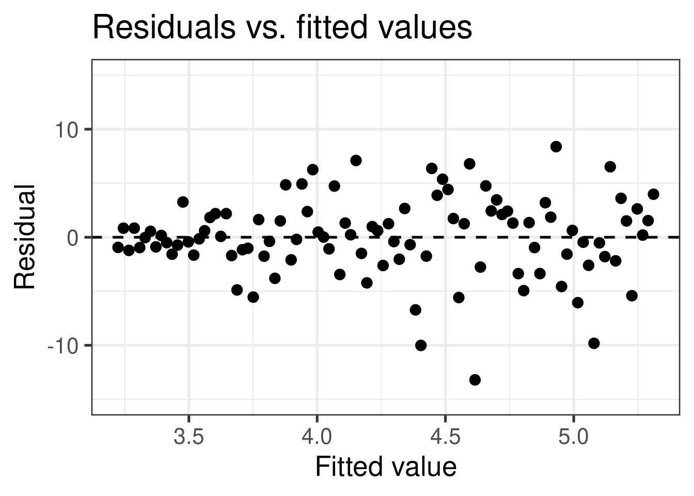
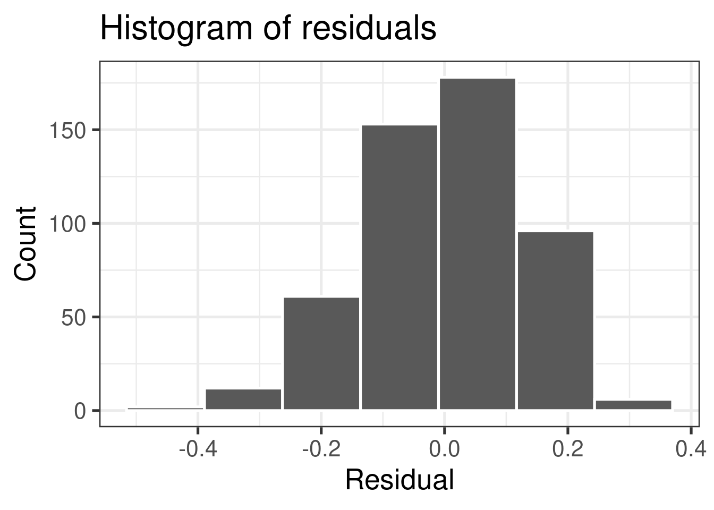
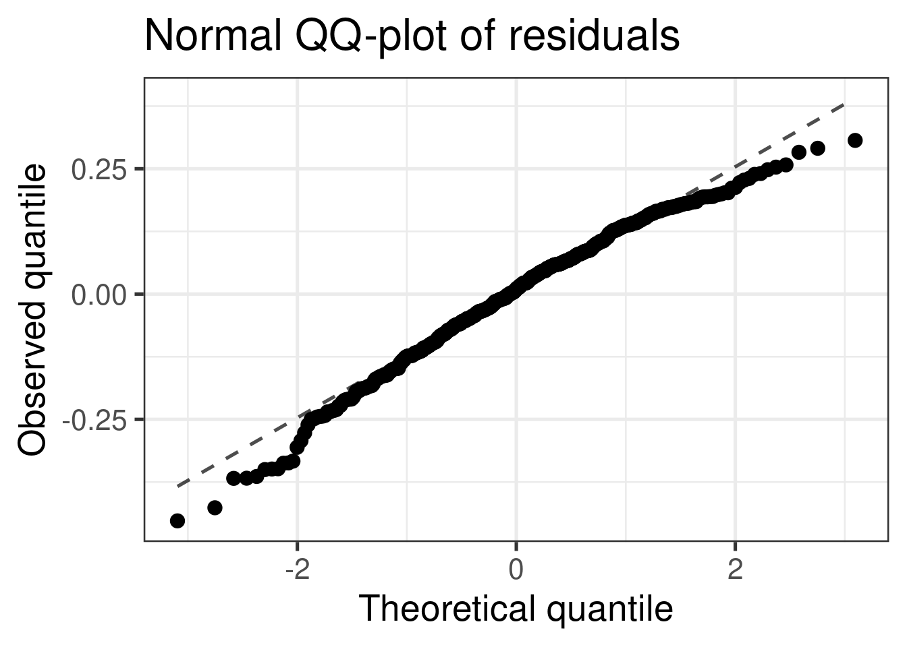
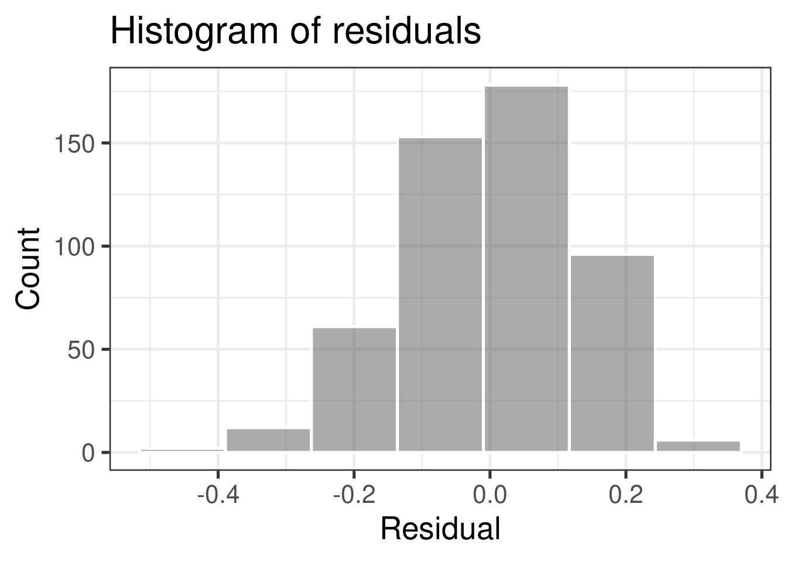

# load packages
library(tidyverse) # for data wrangling and visualization
library(broom) # for formatting model output
library(ggformula) # for making plots using formulas
library(scales) # for pretty axis labels
library(knitr) # for pretty tables
library(kableExtra) # also for pretty tables
library(patchwork) # arrange plots
# Spotify Dataset
spotify <- read_csv("../data/spotify-popular.csv")
# set default theme and larger font size for ggplot2
ggplot2::theme_set(ggplot2::theme_bw(base_size = 20))SLR: Mathematical models for inference
Application exercise
📋 AE 08: Predicion and Conditions - Open in Deepnote
Complete Exercises 0-1.
Mathematical models for inference
Topics
Define mathematical models to conduct inference for the slope
Use mathematical models to
calculate confidence interval for the slope
conduct a hypothesis test for the slope
calculate confidence intervals for predictions
Computational setup
The regression model, revisited
spotify_fit <- lm(danceability ~ duration_ms, data = spotify)
tidy(spotify_fit) |>
kable(digits = 10, format.args = list(scientifi = TRUE))| term | estimate | std.error | statistic | p.value |
|---|---|---|---|---|
| (Intercept) | 7.809197e-01 | 2.754508e-02 | 2.835061e+01 | 0.000000e+00 |
| duration_ms | -4.039000e-07 | 1.282000e-07 | -3.150955e+00 | 1.723739e-03 |
Intervals for predictions
Intervals for predictions
- Question: “What is the predicted danceability for a 3 minute (180,000 ms) song?”
- We said reporting a single estimate for the slope is not wise, and we should report a plausible range instead
- Similarly, reporting a single prediction for a new value is not wise, and we should report a plausible range instead
Warning: Using `size` aesthetic for lines was deprecated in ggplot2 3.4.0.
ℹ Please use `linewidth` instead.`geom_smooth()` using formula = 'y ~ x'
Two types of predictions
Prediction for the mean: “What is the average predicted danceability for three minute songs?”
Prediction for an individual observation: “What is the predicted danceability for the new Magdala Bay song which is exactly three minutes long?”
. . .
Which would you expect to be more variable? The average prediction or the prediction for an individual observation? Based on your answer, how would you expect the widths of plausible ranges for these two predictions to compare?
Uncertainty in predictions
Confidence interval for the mean outcome: \[\large{\hat{y} \pm t_{n-2}^* \times \color{purple}{\mathbf{SE}_{\hat{\boldsymbol{\mu}}}}}\]
. . .
Prediction interval for an individual observation: \[\large{\hat{y} \pm t_{n-2}^* \times \color{purple}{\mathbf{SE_{\hat{y}}}}}\]
Standard errors
Standard error of the mean outcome: \[SE_{\hat{\mu}} = \hat{\sigma}_\epsilon\sqrt{\frac{1}{n} + \frac{(x-\bar{x})^2}{\sum\limits_{i=1}^n(x_i - \bar{x})^2}}\]
. . .
Standard error of an individual outcome: \[SE_{\hat{y}} = \hat{\sigma}_\epsilon\sqrt{1 + \frac{1}{n} + \frac{(x-\bar{x})^2}{\sum\limits_{i=1}^n(x_i - \bar{x})^2}}\]
Standard errors
Standard error of the mean outcome: \[SE_{\hat{\mu}} = \hat{\sigma}_\epsilon\sqrt{\frac{1}{n} + \frac{(x-\bar{x})^2}{\sum\limits_{i=1}^n(x_i - \bar{x})^2}}\]
Standard error of an individual outcome: \[SE_{\hat{y}} = \hat{\sigma}_\epsilon\sqrt{\mathbf{\color{purple}{\Large{1}}} + \frac{1}{n} + \frac{(x-\bar{x})^2}{\sum\limits_{i=1}^n(x_i - \bar{x})^2}}\]
Confidence interval
The 95% confidence interval for the mean outcome:
new_songs <- tibble(duration_ms = 180000)
predict(spotify_fit, newdata = new_songs, interval = "confidence",
level = 0.95) |>
kable()| fit | lwr | upr |
|---|---|---|
| 0.7082244 | 0.6945675 | 0.7218813 |
Warning: `as.tibble()` was deprecated in tibble 2.0.0.
ℹ Please use `as_tibble()` instead.
ℹ The signature and semantics have changed, see `?as_tibble`.. . .
We are 95% confident that the mean danceability for new popular three minute songs on Spotify will be between 0.69 and 0.72.
Prediction interval
The 95% prediction interval for an individual outcome:
new_song <- tibble(duration_ms = 180000)
predict(spotify_fit, newdata = new_song, interval = "prediction",
level = 0.95) |>
kable()| fit | lwr | upr |
|---|---|---|
| 0.7082244 | 0.4518935 | 0.9645553 |
. . .
We are 95% confident that the new Magdala Bay song that is exactly three minutes long will have a danceability between 0.45 and 0.96.
Comparing intervals
`geom_smooth()` using formula = 'y ~ x'
. . .
Complete Exercises 2 and 3.
Extrapolation
Using the model to predict for values outside the range of the original data is extrapolation.
. . .
Calculate the prediction interval for the danceability of a song which is 20 minutes (1.2 Million milliseconds) song.
No, thanks!

Extrapolation
Why do we want to avoid extrapolation?
2005 be like: OMG HOUSING PRICES ARE GOING TO INCREASE FOREVER, YOUR CREDIT DOESN’T MATTER

2007 be like: LOL NO

Model conditions
Model conditions
- Linearity: There is a linear relationship between the outcome and predictor variables
- Constant variance: The variability of the errors is equal for all values of the predictor variable
- Normality: The errors follow a normal distribution
- Independence: The errors are independent from each other
WARNING
- Many of these assumptions are for the population
- We want to determine whether they are met from your data
- In real life, these conditions are almost always violated in one way or another
- Questions you should ask yourself:
- Are my conditions close enough to being satisfied that I can trust the results of my inference
- Do I have reason to believe that my conditions are GROSSLY violated?
- Based on what I see, how trustworthy do I think the results of my inference are.
ENGAGE: SOAP BOX
Statistics and numbers are often used to make arguments seem more “rigorous” or infallible. I’m sure you’ve heard the phrase “the numbers are the numbers” or “you can’t argue with the numbers”. More often than not, this is BULLSHIT. Most data analyses involve making decision which are subjective. The interpretability of any form of statistical inference is heavily influenced by whether the assumptions and conditions of that inference is met, which they almost never are. It is up to the practitioner to determine whether those conditions are met and what impact those conditions have on the results of those analyses. In my work, I rarely encounter practitioners who even know what the conditions are, let alone understand why they are important. FURTHERMORE!!! the quality of your analysis is only as good as the quality of your data. Remember a crap study design will yield crap data which will yield crappy analysis. Statistical analyses yield one important form of evidence which should be combined with other forms of evidence when making an argument.
Linearity
If the linear model, \(\hat{Y} = \hat{\beta}_0 + \hat{\beta}_1X\), adequately describes the relationship between \(X\) and \(Y\), then the residuals should reflect random (chance) error
To assess this, we can look at a plot of the residuals (\(e_i\)’s) vs. the fitted values (\(\hat{y}_i\)’s) or predictors(or \(x_i\)’s)
There should be no distinguishable pattern in the residuals plot, i.e. the residuals should be randomly scattered
A non-random pattern (e.g. a parabola) suggests a linear model that does not adequately describe the relationship between \(X\) and \(Y\)
Linearity
✅ The residuals vs. fitted values plot should show a random scatter of residuals (no distinguishable pattern or structure)

The augment function
augment is from the broom package:
spotify_aug <- augment(spotify_fit)
head(spotify_aug) |> kable()| danceability | duration_ms | .fitted | .resid | .hat | .sigma | .cooksd | .std.resid |
|---|---|---|---|---|---|---|---|
| 0.733 | 147840 | 0.7212126 | 0.0117874 | 0.0057228 | 0.1304132 | 0.0000237 | 0.0907334 |
| 0.630 | 195519 | 0.7019569 | -0.0719569 | 0.0021749 | 0.1303749 | 0.0003332 | -0.5529036 |
| 0.877 | 231848 | 0.6872849 | 0.1897151 | 0.0024253 | 0.1301401 | 0.0025838 | 1.4579193 |
| 0.831 | 220487 | 0.6918732 | 0.1391268 | 0.0020725 | 0.1302669 | 0.0011866 | 1.0689702 |
| 0.668 | 159011 | 0.7167011 | -0.0487011 | 0.0044968 | 0.1303962 | 0.0003170 | -0.3746465 |
| 0.626 | 202621 | 0.6990886 | -0.0730886 | 0.0020230 | 0.1303736 | 0.0003196 | -0.5615572 |
Residuals vs. fitted values (code)
spotify_aug <- augment(spotify_fit)
gf_point(.resid ~ .fitted, data = spotify_aug) |>
gf_hline(yintercept = 0, linetype = "dashed") |>
gf_labs(
x = "Fitted value", y = "Residual",
title = "Residuals vs. fitted values"
)Non-linear relationships
`geom_smooth()` using formula = 'y ~ x'
`geom_smooth()` using formula = 'y ~ x'
Violations of Linearity
- Impact: inference relies on estimates of \(\sigma_\epsilon\) computed from residuals:
- Residuals will be larger in certain places so estimates will be inaccurate
- Therefore, inference (i.e. CIs and p-values) will be inaccurate
- Most importantly… your predictions will be wrong most of the time
- Remedy: transform your data (to come)
. . .
Complete Exercises 4-6
Constant variance
If the spread of the distribution of \(Y\) is equal for all values of \(X\) then the spread of the residuals should be approximately equal for each value of \(X\)
To assess this, we can look at a plot of the residuals vs. the fitted values
The vertical spread of the residuals should be approximately equal as you move from left to right
CAREFUL: Inconsistent distribution of \(X\)s can make it seem as if there is non-constant variance
Constant variance
✅ The vertical spread of the residuals is relatively constant across the plot

Non-constant variance: Fan-Pattern
`geom_smooth()` using formula = 'y ~ x'

- Constant variance is frequently violated when the error/variance is proportional to the response variable
- Whose wealth fluctuates more per day… Dr. Friedlander’s or Elon Musk’s?
Violations of Constant Variance
- Impact: inference relies on estimates of \(\sigma_\epsilon\) computed from residuals:
- Residuals will be larger in certain places so estimates will be inaccurate
- Therefore, inference (i.e. CIs and p-values) will be inaccurate
- Remedy: transform your data (to come)
. . .
Complete Exercises 7
Normality
The linear model assumes that the distribution of \(Y\) is Normal for every value of \(X\)
This is impossible to check in practice, so we will look at the overall distribution of the residuals to assess if the normality assumption is satisfied
A histogram of the residuals should look approximately normal, symmetric, without any huge outliers
A normal QQ-plot falls along a diagonal line
Most inferential methods for regression are robust to some departures from normality, so we can proceed with inference if the sample size is sufficiently large, roughly \(n > 30\) depending on how non-normal your residuals look
- Notable exception: predictions intervals!
Check normality using a histogram

Check normality using a QQ-plot
Code
gf_qq(~.resid, data = spotify_aug) |>
gf_qqline() |>
gf_labs(x = "Theoretical quantile",
y = "Observed quantile",
title = "Normal QQ-plot of residuals")
\(x\)-axis: quantile we would expect from a true normal distribution
\(y\)-axis: quantile we observe in the data
Bell-shaped does not necessarily equal normal… QQ-plot can detect distributions with heavier (i.e. more spread out) tails than a normal distribution
Check normality using a QQ-plot
Code
gf_histogram(~.resid, data = spotify_aug,
bins=7, color = "white") |>
gf_labs(
x = "Residual",
y = "Count",
title = "Histogram of residuals"
)
Code
gf_qq(~.resid, data = spotify_aug) |>
gf_qqline() |>
gf_labs(x = "Theoretical quantile",
y = "Observed quantile",
title = "Normal QQ-plot of residuals")
Assess whether residuals lie along the diagonal line of the Quantile-quantile plot (QQ-plot).
If so, the residuals are normally distributed.
Note: QQ-Plots are pretty sensitive so it doesn’t take too much departure to conclude non-normality
Normality
❌ The residuals do not appear to follow a normal distribution, because the points do not lie on the diagonal line, so normality is not satisfied.
✅ The sample size \(n = 508> 30\), so the sample size is large enough to relax this condition and proceed with inference (mostly).
Violations of Normality
- Impact: depends what you want to do and how large your sample size is
- Your predictions intervals will be wrong… they will be symmetric when they shouldn’t be…
- If you have a large sample size not a big deal for anything else
- Remedy… depends on what you want to do
- If sample size is large enough and don’t care about prediction intervals… do nothing
- Otherwise, transform data… (hard for small sample sizes)
. . .
Complete Exercises 8 and 9.
Independence
We can often check the independence assumption based on the context of the data and how the observations were collected
Two common violations of the independence assumption:
Temporal Correlation: If the data were collected over time, plot the residuals in time order to see if there is a pattern (serial correlation)
Cluster Effect: If there are subgroups represented in the data that are not accounted for in the model, you can color the points in the residual plots by group to see if the model systematically over or under predicts for a particular subgroup
Spatial Correlation: If observations that were close to one another are more correlated than ones which are far apart then independent is violated
Independence
Complete Exercise 10
. . .
❌ Based on the information we have, it’s unlikely the data are independent.
Violations of Independence
- Impact: depends on how it’s violated
- In some cases you’ll underestimate p-values (too many false positives) and make CIs which are too narrow
- In other cases you’ll do the opposite
- Remedy… depends on the source and type of dependence
- Add variable accounting for dependence to model
- Otherwise, beyond the scope of this class
- Time-Series Analysis
- Mixed-Effects Models
- Spacial Statistics
Recap
calculate confidence intervals for predictions
predictions of averages: “confidence intervals”
predictions for single observations: “prediction intervals”
Conditions for inference
Linearity
Constant Variance
Normality
Independence